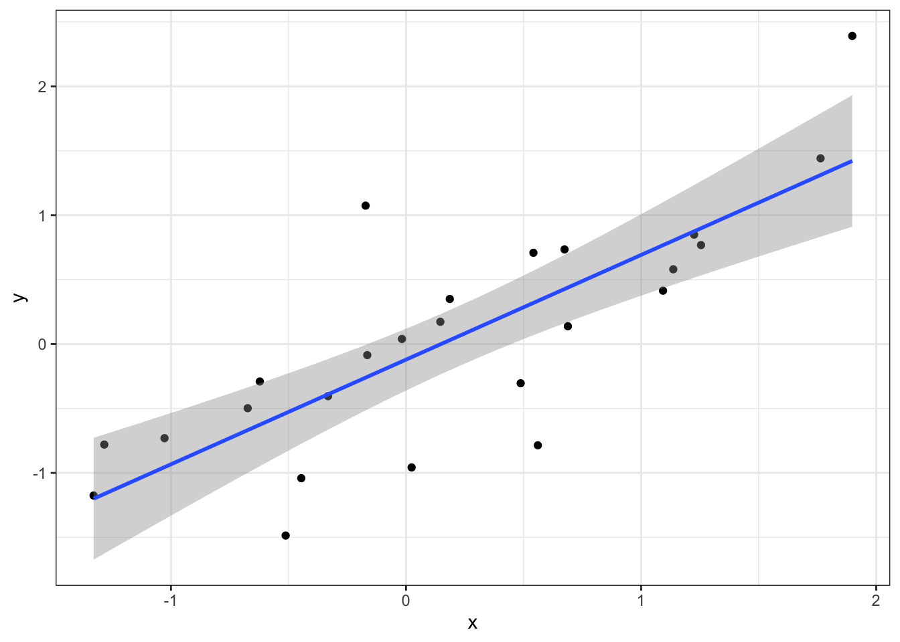
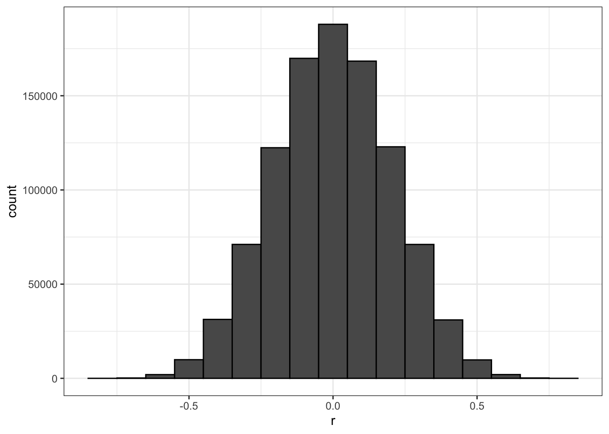
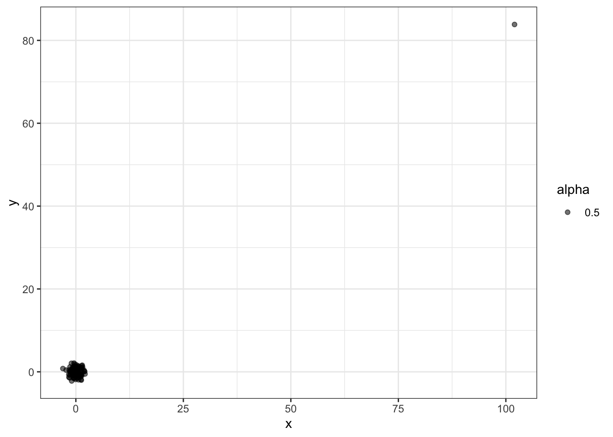
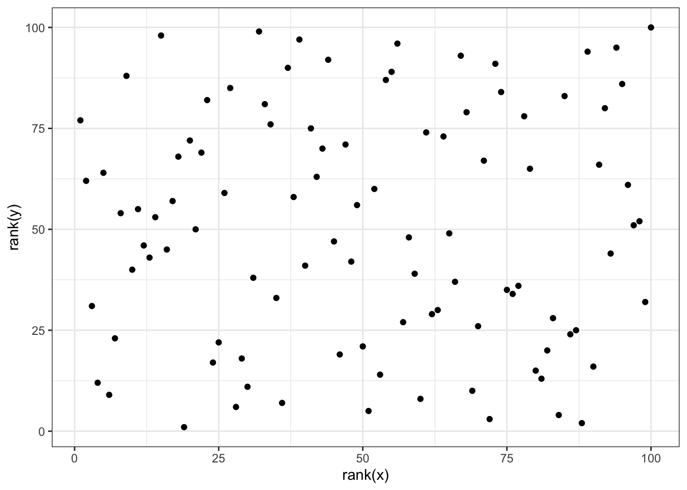
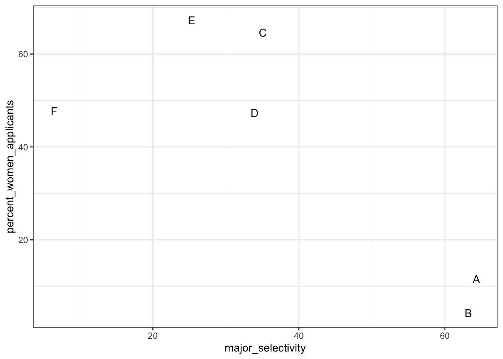
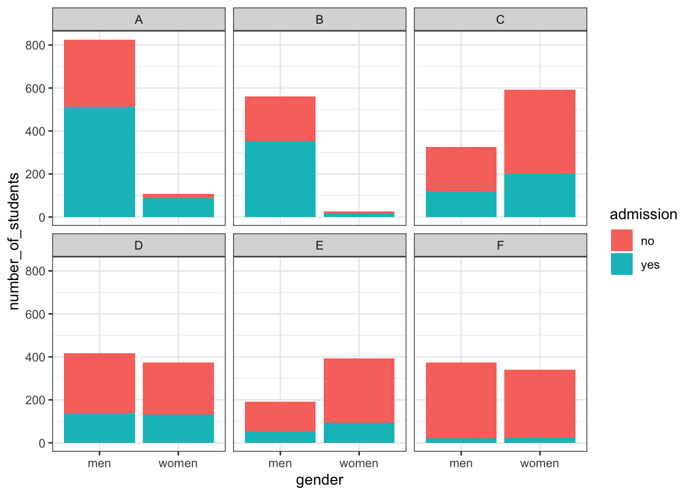
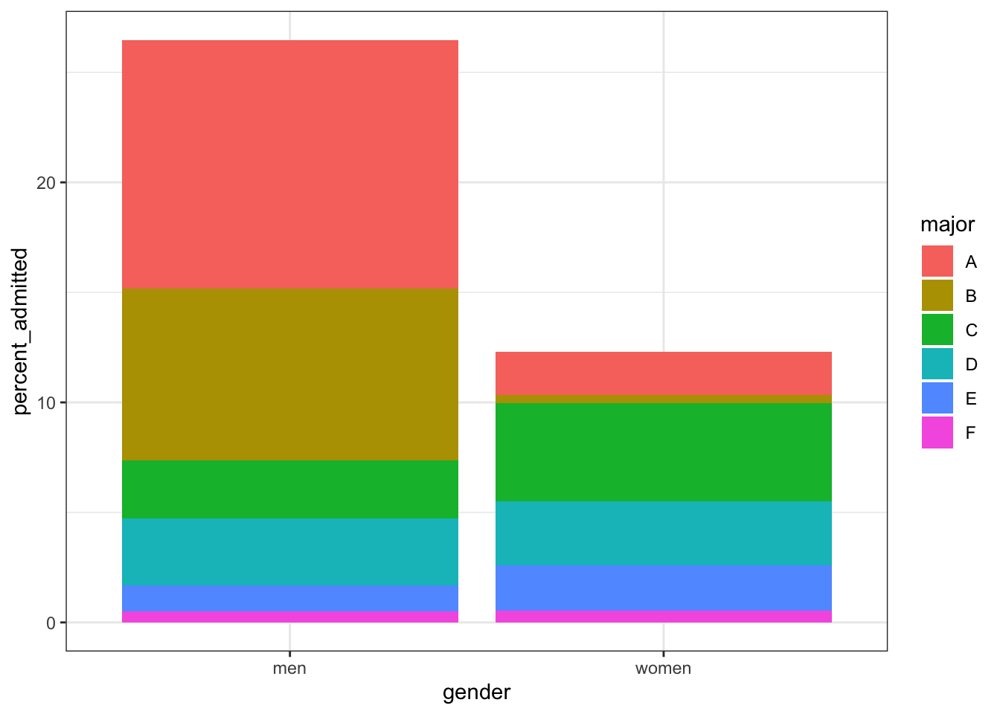
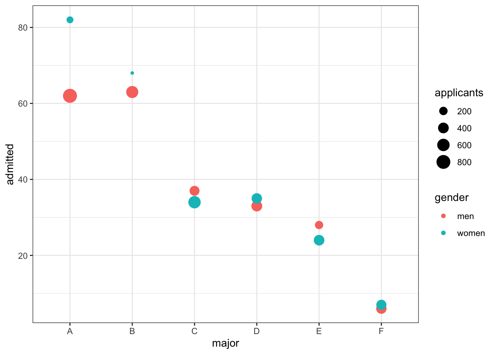
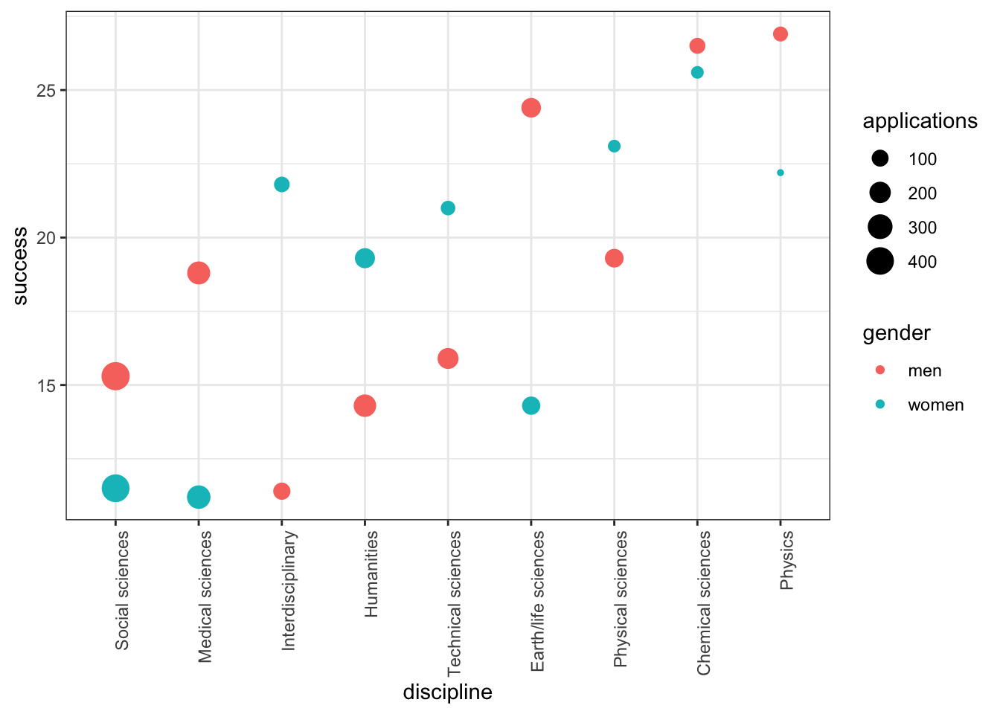

4 Section 3 - Confounding Overview
In the Confounding section, you will learn what is perhaps the most important lesson of statistics: that correlation is not causation.
After completing this section, you will be able to:
- Identify examples of spurious correlation and explain how data dredging can lead to spurious correlation.
- Explain how outliers can drive correlation and learn to adjust for outliers using Spearman correlation.
- Explain how reversing cause and effect can lead to associations being confused with causation.
- Understand how confounders can lead to the misinterpretation of associations.
- Explain and give examples of Simpson’s Paradox.
This section has one part: Correlation is Not Causation.
4.1 Correlation is Not Causation: Spurious Correlation
The textbook for this section is available here
Key points
- Association/correlation is not causation.
- p-hacking is a topic of much discussion because it is a problem in scientific publications. Because publishers tend to reward statistically significant results over negative results, there is an incentive to report significant results.
Code
# generate the Monte Carlo simulation
N <- 25
g <- 1000000
sim_data <- tibble(group = rep(1:g, each = N), x = rnorm(N * g), y = rnorm(N * g))
# calculate correlation between X,Y for each group
res <- sim_data %>%
group_by(group) %>%
summarize(r = cor(x, y)) %>%
arrange(desc(r))## `summarise()` ungrouping output (override with `.groups` argument)res## # A tibble: 1,000,000 x 2
## group r
## <int> <dbl>
## 1 840003 0.794
## 2 767028 0.791
## 3 971856 0.776
## 4 212248 0.768
## 5 60200 0.761
## 6 27045 0.756
## 7 114409 0.756
## 8 755537 0.754
## 9 422986 0.753
## 10 789165 0.747
## # … with 999,990 more rows# plot points from the group with maximum correlation
sim_data %>% filter(group == res$group[which.max(res$r)]) %>%
ggplot(aes(x, y)) +
geom_point() +
geom_smooth(method = "lm")## `geom_smooth()` using formula 'y ~ x'
# histogram of correlation in Monte Carlo simulations
res %>% ggplot(aes(x=r)) + geom_histogram(binwidth = 0.1, color = "black")
# linear regression on group with maximum correlation
library(broom)
sim_data %>%
filter(group == res$group[which.max(res$r)]) %>%
do(tidy(lm(y ~ x, data = .)))## # A tibble: 2 x 5
## term estimate std.error statistic p.value
## <chr> <dbl> <dbl> <dbl> <dbl>
## 1 (Intercept) -0.121 0.116 -1.04 0.309
## 2 x 0.812 0.130 6.27 0.000002134.2 Correlation is Not Causation: Outliers
The textbook for this section is available here
Key points
- Correlations can be caused by outliers.
- The Spearman correlation is calculated based on the ranks of data.
Code
# simulate independent X, Y and standardize all except entry 23
set.seed(1985)
x <- rnorm(100,100,1)
y <- rnorm(100,84,1)
x[-23] <- scale(x[-23])
y[-23] <- scale(y[-23])
# plot shows the outlier
qplot(x, y, alpha = 0.5)
# outlier makes it appear there is correlation
cor(x,y)## [1] 0.988cor(x[-23], y[-23])## [1] -0.0442# use rank instead
qplot(rank(x), rank(y))
cor(rank(x), rank(y))## [1] 0.00251# Spearman correlation with cor function
cor(x, y, method = "spearman")## [1] 0.002514.3 Correlation is Not Causation: Reversing Cause and Effect
The textbook for this section is available here
Key points
- Another way association can be confused with causation is when the cause and effect are reversed.
- In the Galton data, when father and son were reversed in the regression, the model was technically correct. The estimates and p-values were obtained correctly as well. What was incorrect was the interpretation of the model.
Code
# cause and effect reversal using son heights to predict father heights
data("GaltonFamilies")
GaltonFamilies %>%
filter(childNum == 1 & gender == "male") %>%
select(father, childHeight) %>%
rename(son = childHeight) %>%
do(tidy(lm(father ~ son, data = .)))## # A tibble: 2 x 5
## term estimate std.error statistic p.value
## <chr> <dbl> <dbl> <dbl> <dbl>
## 1 (Intercept) 34.0 4.57 7.44 4.31e-12
## 2 son 0.499 0.0648 7.70 9.47e-134.4 Correlation is Not Causation: Confounders
The textbook for this section is available here
Key points
- If X and Y are correlated, we call Z a confounder if changes in Z causes changes in both X and Y.
Code
# UC-Berkeley admission data
data(admissions)
admissions## major gender admitted applicants
## 1 A men 62 825
## 2 B men 63 560
## 3 C men 37 325
## 4 D men 33 417
## 5 E men 28 191
## 6 F men 6 373
## 7 A women 82 108
## 8 B women 68 25
## 9 C women 34 593
## 10 D women 35 375
## 11 E women 24 393
## 12 F women 7 341# percent men and women accepted
admissions %>% group_by(gender) %>%
summarize(percentage =
round(sum(admitted*applicants)/sum(applicants),1))## `summarise()` ungrouping output (override with `.groups` argument)## # A tibble: 2 x 2
## gender percentage
## <chr> <dbl>
## 1 men 44.5
## 2 women 30.3# test whether gender and admission are independent
admissions %>% group_by(gender) %>%
summarize(total_admitted = round(sum(admitted / 100 * applicants)),
not_admitted = sum(applicants) - sum(total_admitted)) %>%
select(-gender) %>%
do(tidy(chisq.test(.)))## `summarise()` ungrouping output (override with `.groups` argument)## # A tibble: 1 x 4
## statistic p.value parameter method
## <dbl> <dbl> <int> <chr>
## 1 91.6 1.06e-21 1 Pearson's Chi-squared test with Yates' continuity correction# percent admissions by major
admissions %>% select(major, gender, admitted) %>%
spread(gender, admitted) %>%
mutate(women_minus_men = women - men)## major men women women_minus_men
## 1 A 62 82 20
## 2 B 63 68 5
## 3 C 37 34 -3
## 4 D 33 35 2
## 5 E 28 24 -4
## 6 F 6 7 1# plot total percent admitted to major versus percent women applicants
admissions %>%
group_by(major) %>%
summarize(major_selectivity = sum(admitted * applicants) / sum(applicants),
percent_women_applicants = sum(applicants * (gender=="women")) /
sum(applicants) * 100) %>%
ggplot(aes(major_selectivity, percent_women_applicants, label = major)) +
geom_text()## `summarise()` ungrouping output (override with `.groups` argument)
# plot number of applicants admitted and not
admissions %>%
mutate(yes = round(admitted/100*applicants), no = applicants - yes) %>%
select(-applicants, -admitted) %>%
gather(admission, number_of_students, -c("major", "gender")) %>%
ggplot(aes(gender, number_of_students, fill = admission)) +
geom_bar(stat = "identity", position = "stack") +
facet_wrap(. ~ major)
admissions %>%
mutate(percent_admitted = admitted * applicants/sum(applicants)) %>%
ggplot(aes(gender, y = percent_admitted, fill = major)) +
geom_bar(stat = "identity", position = "stack")
# condition on major and then look at differences
admissions %>% ggplot(aes(major, admitted, col = gender, size = applicants)) + geom_point()
# average difference by major
admissions %>% group_by(gender) %>% summarize(average = mean(admitted))## `summarise()` ungrouping output (override with `.groups` argument)## # A tibble: 2 x 2
## gender average
## <chr> <dbl>
## 1 men 38.2
## 2 women 41.74.5 Simpson’s Paradox
The textbook for this section is available here
Key point
- Simpson’s Paradox happens when we see the sign of the correlation flip when comparing the entire dataset with specific strata.
4.6 Assessment - Correlation is Not Causation
- In the video, we ran one million tests of correlation for two random variables, X and Y.
How many of these correlations would you expect to have a significant p-value (p>0.05), just by chance?
- A. 5,000
- B. 50,000
- C. 100,000
- D. It’s impossible to know
The chance of finding a correlation when none exists is \(0.05*1.000.000\) chances
- Which of the following are examples of p-hacking?
- A. Looking for associations between an outcome and several exposures and only reporting the one that is significant.
- B. Trying several different models and selecting the one that yields the smallest p-value.
- C. Repeating an experiment multiple times and only reporting the one with the smallest p-value.
- D. Using a Monte Carlo simulations in an analysis.
- The Spearman correlation coefficient is robust to outliers because:
- A. It drops outliers before calculating correlation.
- B. It is the correlation of standardized values.
- C. It calculates correlation between ranks, not values.
- What can you do to determine if you are misinterpreting results because of a confounder?
- A. Nothing, if the p-value says the result is significant, then it is.
- B. More closely examine the results by stratifying and plotting the data.
- C. Always assume that you are misinterpreting the results.
- D. Use linear models to tease out a confounder.
- Look again at the admissions data using ?admissions. What important characteristic of the table variables do you need to know to understand the calculations used in this video? Select the best answer.
- A. The data is from 1973.
- B. The columns “major” and “gender” are of class character, while “admitted” and “applicants” are numeric.
- C. The data is from the “dslabs” package.
- D. The column “admitted” is the percent of student admitted, while the column “applicants” is the total number of applicants.
- In the example in the video, major selectivity confounds the relationship between UC Berkley admission rates and gender because:
- A. It was harder for women to be admitted to UC Berkeley.
- B. Major selectivity is associated with both admission rates and with gender, as women tended to apply to more selective majors.
- C. Some majors are more selective than others
- D. Major selectivity is not a confounder.
- Admission rates at UC Berkeley are an example of Simpson’s Paradox because:
- A. It appears that men have higher a higher admission rate than women, however, after we stratify by major, we see that on average women have a higher admission rate than men.
- B. It was a paradox that women were being admitted at a lower rate than men.
- C. The relationship between admissions and gender is confounded by major selectivity.
4.7 Assessment - Confounding
For this set of exercises, we examine the data from a 2014 PNAS paper that analyzed success rates from funding agencies in the Netherlands and concluded:
“our results reveal gender bias favoring male applicants over female applicants in the prioritization of their”quality of researcher" (but not “quality of proposal”) evaluations and success rates, as well as in the language used in instructional and evaluation materials."
A response was published a few months later titled No evidence that gender contributes to personal research funding success in The Netherlands: A reaction to Van der Lee and Ellemers, which concluded:
However, the overall gender effect borders on statistical significance, despite the large sample. Moreover, their conclusion could be a prime example of Simpson’s paradox; if a higher percentage of women apply for grants in more competitive scientific disciplines (i.e., with low application success rates for both men and women), then an analysis across all disciplines could incorrectly show “evidence” of gender inequality.
Who is right here: the original paper or the response? Here, you will examine the data and come to your own conclusion.
The main evidence for the conclusion of the original paper comes down to a comparison of the percentages. The information we need was originally in Table S1 in the paper, which we include in dslabs:
data("research_funding_rates")
research_funding_rates## discipline applications_total applications_men applications_women awards_total awards_men awards_women success_rates_total success_rates_men success_rates_women
## 1 Chemical sciences 122 83 39 32 22 10 26.2 26.5 25.6
## 2 Physical sciences 174 135 39 35 26 9 20.1 19.3 23.1
## 3 Physics 76 67 9 20 18 2 26.3 26.9 22.2
## 4 Humanities 396 230 166 65 33 32 16.4 14.3 19.3
## 5 Technical sciences 251 189 62 43 30 13 17.1 15.9 21.0
## 6 Interdisciplinary 183 105 78 29 12 17 15.8 11.4 21.8
## 7 Earth/life sciences 282 156 126 56 38 18 19.9 24.4 14.3
## 8 Social sciences 834 425 409 112 65 47 13.4 15.3 11.5
## 9 Medical sciences 505 245 260 75 46 29 14.9 18.8 11.2- Construct a two-by-two table of gender (men/women) by award status (awarded/not) using the total numbers across all disciplines.
What is the number of men not awarded?
What is the number of women not awarded?
two_by_two <- research_funding_rates %>%
select(-discipline) %>%
summarize_all(funs(sum)) %>%
summarize(yes_men = awards_men,
no_men = applications_men - awards_men,
yes_women = awards_women,
no_women = applications_women - awards_women) %>%
gather %>%
separate(key, c("awarded", "gender")) %>%
spread(gender, value)
two_by_two## awarded men women
## 1 no 1345 1011
## 2 yes 290 177- Use the two-by-two table from Question 1 to compute the percentages of men awarded versus women awarded.
What is the percentage of men awarded?
two_by_two %>%
mutate(men = round(men/sum(men)*100, 1), women = round(women/sum(women)*100, 1)) %>%
filter(awarded == "yes") %>%
pull(men)## [1] 17.7What is the percentage of women awarded?
two_by_two %>%
mutate(men = round(men/sum(men)*100, 1), women = round(women/sum(women)*100, 1)) %>%
filter(awarded == "yes") %>%
pull(women)## [1] 14.9- Run a chi-squared test on the two-by-two table to determine whether the difference in the two success rates is significant. (You can use
tidy()to turn the output ofchisq.test()into a data frame as well.)
What is the p-value of the difference in funding rate?
two_by_two %>% select(-awarded) %>% chisq.test() %>% tidy() %>% pull(p.value)## [1] 0.0509- There may be an association between gender and funding. But can we infer causation here? Is gender bias causing this observed difference? The response to the original paper claims that what we see here is similar to the UC Berkeley admissions example. Specifically they state that this “could be a prime example of Simpson’s paradox; if a higher percentage of women apply for grants in more competitive scientific disciplines, then an analysis across all disciplines could incorrectly show ‘evidence’ of gender inequality.”
To settle this dispute, use this dataset with number of applications, awards, and success rate for each gender:
dat <- research_funding_rates %>%
mutate(discipline = reorder(discipline, success_rates_total)) %>%
rename(success_total = success_rates_total,
success_men = success_rates_men,
success_women = success_rates_women) %>%
gather(key, value, -discipline) %>%
separate(key, c("type", "gender")) %>%
spread(type, value) %>%
filter(gender != "total")
dat## discipline gender applications awards success
## 1 Social sciences men 425 65 15.3
## 2 Social sciences women 409 47 11.5
## 3 Medical sciences men 245 46 18.8
## 4 Medical sciences women 260 29 11.2
## 5 Interdisciplinary men 105 12 11.4
## 6 Interdisciplinary women 78 17 21.8
## 7 Humanities men 230 33 14.3
## 8 Humanities women 166 32 19.3
## 9 Technical sciences men 189 30 15.9
## 10 Technical sciences women 62 13 21.0
## 11 Earth/life sciences men 156 38 24.4
## 12 Earth/life sciences women 126 18 14.3
## 13 Physical sciences men 135 26 19.3
## 14 Physical sciences women 39 9 23.1
## 15 Chemical sciences men 83 22 26.5
## 16 Chemical sciences women 39 10 25.6
## 17 Physics men 67 18 26.9
## 18 Physics women 9 2 22.2To check if this is a case of Simpson’s paradox, plot the success rates versus disciplines, which have been ordered by overall success, with colors to denote the genders and size to denote the number of applications.
dat %>%
ggplot(aes(discipline, success, size = applications, color = gender)) +
theme(axis.text.x = element_text(angle = 90, hjust = 1)) +
geom_point()
In which fields do men have a higher success rate than women?
- A. Chemical sciences
- B. Earth/life sciences
- C. Humanities
- D. Interdisciplinary
- E. Medical sciences
- F. Physical sciences
- G. Physics
- H. Social sciences
- I. Technical sciences
Which two fields have the most applications from women?
- A. Chemical sciences
- B. Earth/life sciences
- C. Humanities
- D. Interdisciplinary
- E. Medical sciences
- F. Physical sciences
- G. Physics
- H. Social sciences
- I. Technical sciences
Which two fields have the lowest overall funding rates?
- A. Chemical sciences
- B. Earth/life sciences
- C. Humanities
- D. Interdisciplinary
- E. Medical sciences
- F. Physical sciences
- G. Physics
- H. Social sciences
- I. Technical sciences